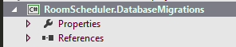

-
Database Development Guidance - Schema Creation, Migration, Automation, Versioning
Database Development Guidance - Schema Creation, Migration, Automation, Versioning
TODO: http://www.informatica.com/se/Images/02241data-migration-baseline-deploymentips_en-US.pdf https://github.com/schambers/fluentmigrator/wiki/Enforce-migration-version-numbering-rules
I had several goals in mind before choosing FluentMigrator as the primary database migration tool. So here they are:
- New developers in project should be able to build the entire database in their local system with a single click
- Altering the database schema should be versioned
- Version tracking of the underlying database
- Upgrading and migrating the database should be done automatically
- Schema creation should be database provider agnostic - same schema should be able to be deployed to MSSQL, PostgreSql and MYSQL
Database development process overtime sketches
Step by step guide
1. Create New Class Library Project

2. Install-Package FluentMigrator
3. Create new folder "Migrations" to project - here we gonna store migration files
4. Create new class "Baseline.cs" - the life of the database starts from this class
For demonstration purpose we are going to build database schema for basic RoomScheduler system. The baseline script will contain all initial tables and columns that our system needs. So, I am going to create 2 tables - Room and Person.
using System; using FluentMigrator; namespace RoomScheduler.DatabaseMigrations.Migrations { [Migration(0)] public class Baseline : Migration { /// <summary> /// Executes when upgrading the database to higher version /// </summary> public override void Up() { Create.Table("Room") .WithColumn("Id").AsInt32().NotNullable().PrimaryKey() .WithColumn("DateCreated").AsDateTime().NotNullable() .WithColumn("Name").AsString(50).NotNullable(); Create.Table("Person") .WithColumn("Id").AsInt32().NotNullable().PrimaryKey() .WithColumn("DateCreated").AsDateTime().NotNullable() .WithColumn("FirstName").AsString(50).NotNullable() .WithColumn("LastName").AsString(50).NotNullable() .WithColumn("ImgSrc").AsString(50).NotNullable(); } /// <summary> /// Executes when downgrading the database from higher version to lower version /// </summary> public override void Down() { throw new NotImplementedException(); } } }I like fluently written code. Pretty nice, huh? At this point of time I consider the "Down" process not providing enough value for the effort required. So we are going to write code in there. When we want to go down few levels with the db versions, we are going to rebuild the whole database from Baseline to the latest version. In future if our database scripts grow so so much, then I might consider writing down code for some of the latest scripts.
Next, let's initialize the database with our script.
5. Create MSBuild Migration Runner (MSBuildMigrationRunner.proj)
This is my basic "bare-bones" MSBuild migration runner. More about other migration runners can be found in the official documentation.
<?xml version="1.0"?> <Project xmlns="http://schemas.microsoft.com/developer/msbuild/2003" DefaultTargets="Migrate"> <PropertyGroup> <MigratorTasksDirectory>$(MSBuildProjectDirectory)\..\Solution-RoomScheduler\packages\FluentMigrator.1.3.0.0\tools\</MigratorTasksDirectory> <DatabaseProvider>SqlServer2012</DatabaseProvider> <ConnectionStringName>Default</ConnectionStringName> <ConnectionStringConfigPath>ConnectionStrings.Local.config</ConnectionStringConfigPath> <DataMigrationProjectBuildDLL>$(MSBuildProjectDirectory)\..\Solution-RoomScheduler\RoomScheduler.DatabaseMigrations\bin\Debug\RoomScheduler.DatabaseMigrations.dll</DataMigrationProjectBuildDLL> <DataMigrationProjectCsproj>$(MSBuildProjectDirectory)\..\Solution-RoomScheduler\RoomScheduler.DatabaseMigrations\RoomScheduler.DatabaseMigrations.csproj</DataMigrationProjectCsproj> </PropertyGroup> <UsingTask TaskName="FluentMigrator.MSBuild.Migrate" AssemblyFile="$(MigratorTasksDirectory)FluentMigrator.MSBuild.dll"/> <Target Name="Build"> <MSBuild Projects="$(DataMigrationProjectCsproj)" Properties="Configuration=Debug"/> </Target> <Target Name="Migrate" DependsOnTargets="Build"> <Message Text="Starting FluentMigrator Migration"/> <Migrate Database="$(DatabaseProvider)" Connection="$(ConnectionStringName)" ConnectionStringConfigPath="$(ConnectionStringConfigPath)" Target="$(DataMigrationProjectBuildDLL)" Output="True" Verbose="True"> </Migrate> </Target> <Target Name="MigratePreview" DependsOnTargets="Build"> <Message Text="Previewing FluentMigrator Migration"/> <Migrate Database="$(DatabaseProvider)" Connection="$(ConnectionStringName)" ConnectionStringConfigPath="$(ConnectionStringConfigPath)" Target="$(DataMigrationProjectBuildDLL)" Output="True" Verbose="True" PreviewOnly="True"> </Migrate> </Target> <Target Name="MigrateRollbackAll" DependsOnTargets="Build"> <Message Text="Starting FluentMigrator Migration Rollback All"/> <Migrate Database="$(DatabaseProvider)" Connection="$(ConnectionStringName)" ConnectionStringConfigPath="$(ConnectionStringConfigPath)" Target="$(MSBuildProjectDirectory)\bin\Debug\AjdeNaOdmor.DatabaseMigration.dll" Task="rollback:all" Output="True" Verbose="True"> </Migrate> </Target> </Project>Probably you are asking where do I put this file and how my project structure is organized regarding this. Here is my project structure.
IMAGE
6. Create .BAT script (MSBuildMigrator.Local.Migrate.bat) that would run MSBuildMigrationRunner.proj with suitable task
C:\Windows\Microsoft.NET\Framework\v4.0.30319\MSBuild.exe MSBuildMigrationRunner.proj /t:Migrate pauseWe can also create one other script for running MigratePreview task.
C:\Windows\Microsoft.NET\Framework\v4.0.30319\MSBuild.exe MSBuildMigrationRunner.proj /t:MigratePreview pause7. Execute the Migrate or MigratePreview .bat file
Re-factoring the MSBuildMigration script and it's independence
Create ConnectionStrings.config in the root of the project and specify the connections strings there. From there it can be easily used everywhere it is needed across all projects.
Source link: https://github.com/schambers/fluentmigrator/wiki
Documentation: https://github.com/schambers/fluentmigrator/wiki
MS Build community tasks: https://github.com/miroslavpopovic/msbuild-fluentmigrator/tree/master/tools/MSBuild%20Community%20Tasks http://www.codeproject.com/Articles/402430/Using-FluentMigrator-with-MSBuildSummary